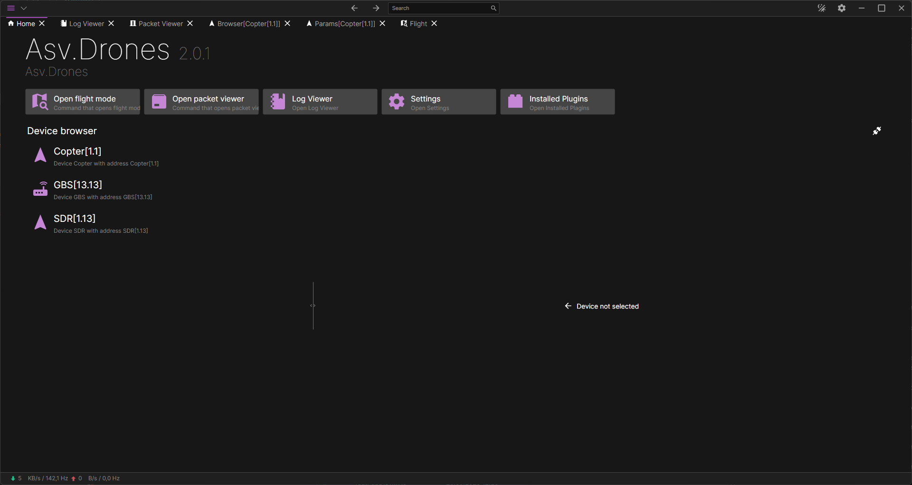

Protocols
Asv.Mavlink
MAVLink for .NET. Connect vehicles and payloads, receive telemetry, send commands, and build your own tools.
From a single protocol to a complete ground station.
Applications and .NET libraries for the world
where software meets hardware.
A modular ground control station for ArduPilot and PX4. Connect your vehicles, work with telemetry, and extend your workspace with plugins.

Use one library. Combine a few.
Build something of your own.
MAVLink for .NET. Connect vehicles and payloads, receive telemetry, send commands, and build your own tools.
Read GNSS data and work with receiver protocols, from NMEA and RTCM to UBX, SBF, and more.
Build cross-platform Avalonia applications with reusable controls, dialogs, theming, and workspace tools.
The shared foundation: I/O, configuration, protocol routing, serialization, and application infrastructure.
An RTK ground base station service that connects GNSS receivers and delivers corrections over MAVLink.
Explore SDR payload integration, spectrum analysis, and mission-specific controls in the drone stack.
Digital signal processing building blocks with a fluent API for composing signal-processing workflows.
Inspect PX4 ULog files, extract messages, and read recorded parameters with a parser and command-line tools.
Reactive audio pipelines for capture and playback devices, with Opus encoding and decoding.
A common interface for displays, keyboards, LEDs, switches, and other hardware components.
Start at the layer you need. Our applications, interfaces, and protocol libraries give you building blocks for your own connected systems.
Explore the ecosystem ↗Try a project, report an issue, or contribute your next idea.
There’s more than one way to be part of asv-soft.